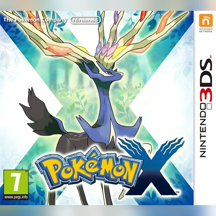
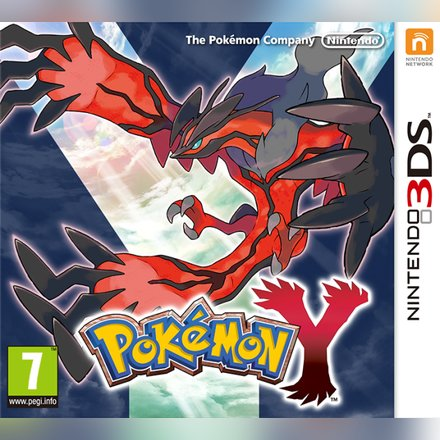
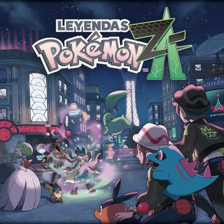
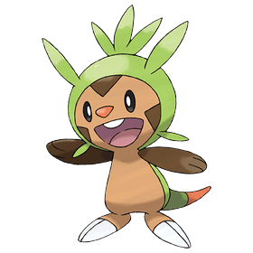
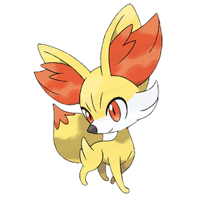
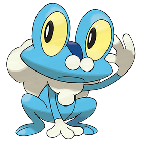

Pokémon X
Nintendo 3DS · 2013
Región de Kalos · X e Y (2013)
Kalos se inspira en Francia. En el centro está Ciudad Luminalia, una gran ciudad con la Torre Prisma, parecida a la torre Eiffel. Hay palacios, cafés y mucha moda, y es la primera región en 3D de la serie principal.
Hace 3000 años hubo una gran guerra en Kalos. AZ, el rey, construyó un arma terrible para revivir a su Floette y acabó con la guerra, pero a un precio enorme. Los legendarios son Xerneas, el Pokémon de la vida, e Yveltal, el de la destrucción. El Team Flare, dirigido por Lysson, quiere usar el arma para quedarse con un mundo "bonito" solo para ellos.
El protagonista se acaba de mudar a Pueblo Boceto. El Profesor Ciprés, que estudia la megaevolución, le envía su primer Pokémon a través de sus nuevos amigos. Más adelante el profesor le regala también un inicial de Kanto. La Campeona es Dianta, una famosa actriz.


Nintendo 3DS · 2013

Nintendo 3DS · 2013

Nintendo Switch / Switch 2 · 2025


